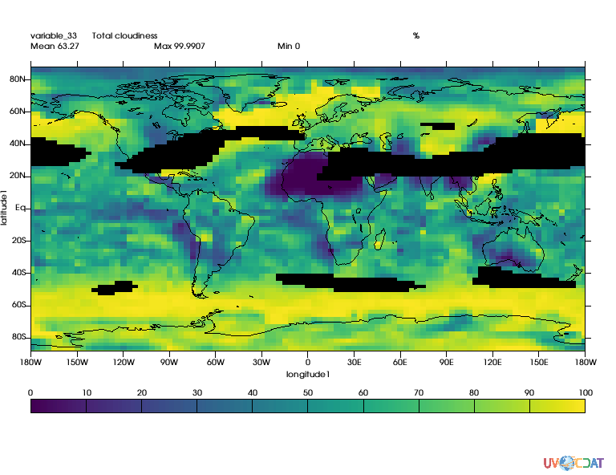
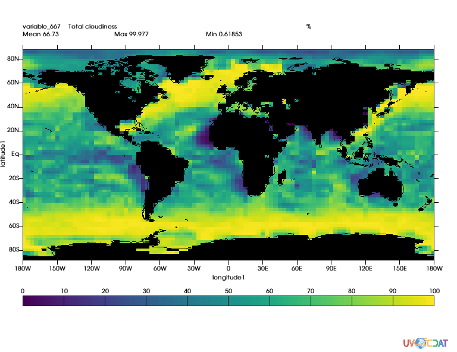
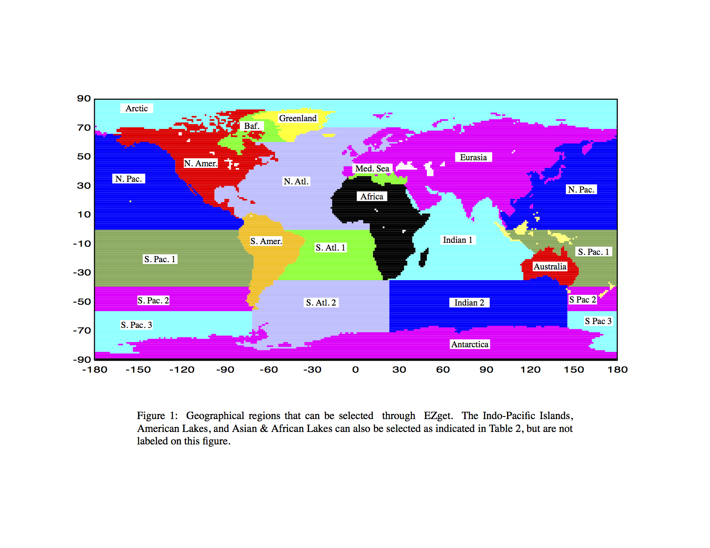
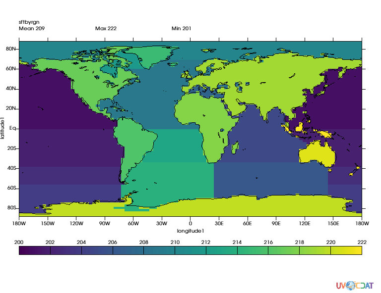
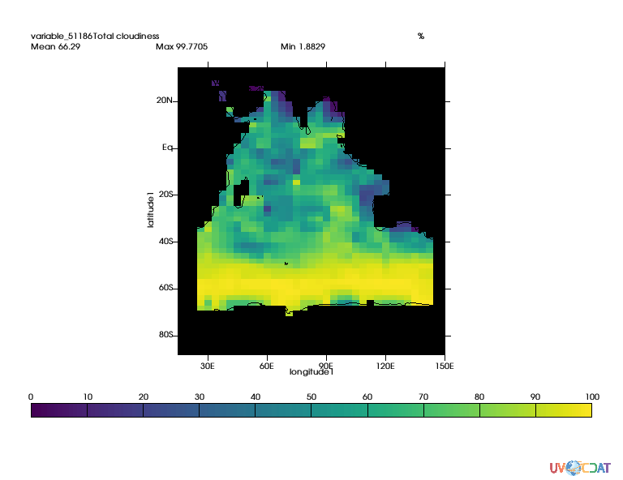

Notebook can be accessed here
import requests
r = requests.get("https://uvcdat.llnl.gov/cdat/sample_data/clt.nc",stream=True)
with open("clt.nc","wb") as f:
for chunk in r.iter_content(chunk_size=1024):
if chunk: # filter local_filename keep-alive new chunks
f.write(chunk)
# and load data
import cdms2
f = cdms2.open("clt.nc")
clt = f("clt", time=slice(0,1), squeeze=1) # Get first month
u = f("u", level=slice(0,1), squeeze=1)
v = f("v", level=slice(0,1), squeeze=1)
clt = clt.regrid(u.getGrid(), regridTool="regrid2") # Put data on same grid
# computes wind speed
import MV2
speed = MV2.sqrt(u**2+v**2)
print "Max speed:", speed.max()
print "Mean speed:",speed.mean()
print "Min speed:",speed.min()
# Prepare graphics
import vcs
x=vcs.init()
Max speed: 68.9132
Mean speed: 16.2591233086
Min speed: 0.0611087
# Let's mask out area where wind speed is greater than twice mean
mask = MV2.greater(speed,speed.mean()*2.)
# Let's apply this mask
clt_masked = MV2.masked_where(mask,clt)
x.plot(clt_masked)
/Users/doutriaux1/anaconda2/envs/2.12-nox/lib/python2.7/site-packages/vcs/VTKPlots.py:998: MaskedArrayFutureWarning: setting an item on a masked array which has a shared mask will not copy the mask and also change the original mask array in the future.
Check the NumPy 1.11 release notes for more information.
data[:] = numpy.ma.masked_invalid(data, numpy.nan)
/Users/doutriaux1/anaconda2/envs/2.12-nox/lib/python2.7/site-packages/numpy/ma/core.py:6385: MaskedArrayFutureWarning: In the future the default for ma.maximum.reduce will be axis=0, not the current None, to match np.maximum.reduce. Explicitly pass 0 or None to silence this warning.
return self.reduce(a)
/Users/doutriaux1/anaconda2/envs/2.12-nox/lib/python2.7/site-packages/numpy/ma/core.py:6385: MaskedArrayFutureWarning: In the future the default for ma.minimum.reduce will be axis=0, not the current None, to match np.minimum.reduce. Explicitly pass 0 or None to silence this warning.
return self.reduce(a)

Conveniently CDAT can generate masks for you (for regular grids only).
The observed data set used here as the basis for creating realistic model land/sea masks was obtained from the U.S. Navy on a 1/6 degree longitude-latitude grid.
more on the technique used can be read here
import cdutil
mask = cdutil.generateLandSeaMask(clt)
mask2 = MV2.where(mask._mask,1.,mask) # Not needed for cdutil versions >= 2.12.2017.9.25
mask2.setAxisList(mask.getAxisList()) # Not needed for cdutil versions >= 2.12.2017.9.25
clt_masked = MV2.masked_where(mask2,clt)
x.clear()
x.plot(clt_masked)

CDAT also provide capabilities to mask regions. Original regions and their numbers come from EzGet
The function requires both a land/sea mask and a file reporting “regions”, default “region” mask is as follow: 
Regions tables is:
regions, guess = cdutil.generateSurfaceTypeByRegionMask(mask2*100., verbose=False)
Done : | | 0.00Done : ## | 4.76Done : #### | 9.Done : ###### | 14.29Done : ######## | 19.Done : ########## | 23.Done : ############ | 28.Done : ############## | 33.33Done : ################ | 38.10Done : ################## | 42.86Done : #################### | 47.62Done : ##################### | 52.Done : ####################### | 57.Done : ######################### | 61.Done : ########################### | 66.Done : ############################# | 71.Done : ############################### | 76.Done : ################################# | 80.95Done : ################################### | 85.71Done : ##################################### | 90.Done : ####################################### | 95.24Done : ########################################| 100.00%
# let's take a look
x.clear()
x.plot(regions)

# Now let's extract the indian ocean which according to table are area 205 and 206
ind1 = MV2.equal(regions,205)
ind2 = MV2.equal(regions,206)
indian_ocean = MV2.logical_or(ind1,ind2)
clt_indian_ocean = MV2.masked_where(MV2.logical_not(indian_ocean),clt)
x.clear()
x.plot(clt_indian_ocean(longitude=(15,150),latitude=(-90,35)),ratio="autot")
